| model | RMSE | CRPS |
|---|---|---|
| MEAN | 496.4603 | 481.12700 |
| Seasonal mean | 563.8767 | NA |
| Seasonal mean weighted | 509.3625 | NA |
| Seasonal mean exponentially weighted | 362.8018 | NA |
| NAIVE | 141.1856 | 99.18804 |
| SNAIVE | 402.2951 | NA |
| Drift | 141.3862 | 99.43200 |
DART - Epidemiological model forecast outputs
Tuyen Huynh
Data description
Epidemiological data
- Source: Ho Chi Minh City CDC
- Temporal coverage: 2000 – 2022 (inclusive)
- Train set: 2000 – 2018
- Test set: 2019 (in 4-week chunks)
- Format: Weekly aggregated admission
- Raw format is line listing – each case admission is one row
- Spatial coverage: Ho Chi Minh City
- In-patient cases only
- out-patient data is only available from 2017
Figure 1. Dengue weekly incidence time series
Figure 2. Train - test set splits
Meteorological data
- Source: ERA5 – ECMWF atmospheric reanalysis (5th gen)
- Variables: 2m temperature, total precipitation, relative humidity
- All variables are daily aggregated
- Temporal coverage: 1999 – 2022 (inclusive)
- Train set: 2000 – 2018
- Test set: 2019
- Temporal resolution: Daily
- Spatial coverage: Ho Chi Minh City*
* cropped by Ho Chi Minh City 10km buffer bounding box and then spatially aggregated in R
Figure 3. Weekly mean 2m temperature
Figure 4. Weekly total precipitation

Figure 5. Weekly mean relative humidity
Models
Non-parametric models
- Mean
- Seasonal mean
- Naïve
- Drift
- Seasonal Naïve
Parametric models
- ARIMA family
- Facebook Prophet
- With exogenous regressors
- With holidays
- GLM regression
- Poisson
- Negative binomial
Credit: Hyndman, R.J., & Athanasopoulos, G. (2021) Forecasting: principles and practice, 3rd edition, OTexts: Melbourne, Australia. OTexts.com/fpp3
Forecast strategy
What we want: 1-4 weeks ahead forecasting
How do we achieve it:
- Recursive Multiple Input Single Output (MISO)
- Direct MISO
- Multiple Input Multiple Output
Forecast strategy
How do we do this for a whole year:
Forecasting step: 1 week
Sliding step: 4 weeks
Forecast strategy
Performance assessment:
- Root Mean Squared Error (RMSE): calculate mean RMSE for each 4-week forecast chunks and calculate mean RMSE of the whole model.
- Continuous Ranked Probability Score (CRPS): calculated using the probabilistic forecast instead of the point forecast.
Non-parametric models
Mean
The forecasts of future values are all equaled to the mean of the historical values.
\({\hat{y}}_{T+h|T}={\bar{y}}=(y_{1}+\cdot\cdot\cdot+y_{T})/T\)
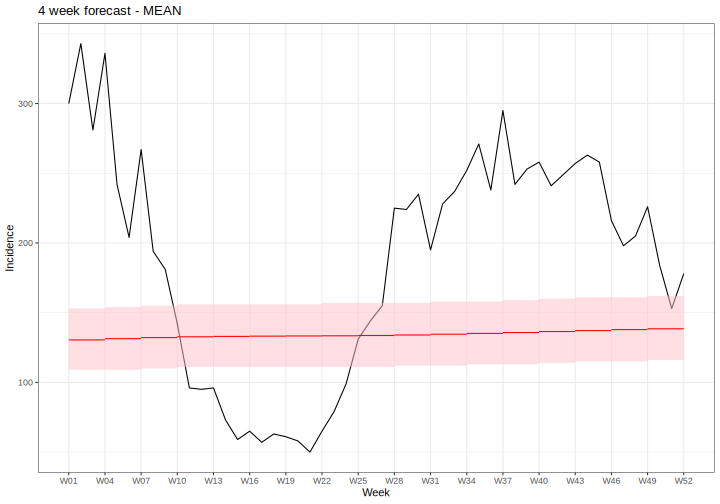Figure 6. 4 week forecast - MEAN
Seasonal mean
The forecasts of future timepoints are all equaled to the mean of the historical timepoints in previous seasons.
Figure 7. 4 week forecast - Seasonal mean
Naïve
The forecasts of future values are all equaled to the latest historical value.
\({\hat{y}}_{T+h|T}=y_T\)
Figure 8. 4 week forecast - NAIVE
Drift
Same as naïve, but the forecasts can increase or decrease depends on average change in historical data.
\(\hat{y}_{T+h|T}=y_{T}+\frac{h}{T-1}\sum_{t=2}^{T}(y_{t}-y_{t-1})=y_{T}+h\left(\frac{y_{T}-y_{1}}{T-1}\right)\)
Figure 9. 4 week forecast - Drift
Seasonal naïve
The forecasts of future time points are all equaled to the its historical value last season.
\({\hat{y}}_{T+h|T}=y_{T+h-m(k+1)}\)
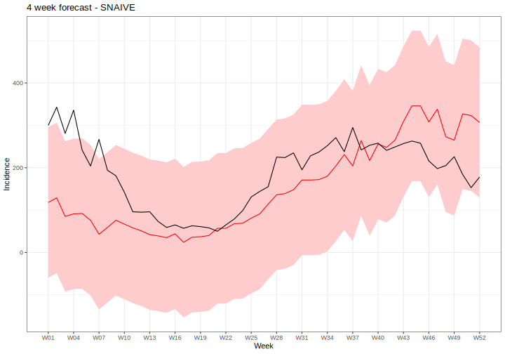Figure 10. 4 week forecast - SNAIVE
Non-parametric models’ performances
Parametric models
ARIMA family
- AR – Autoregressive
- MA – Moving Average
- ARIMA – Autoregressive Integrated Moving Average
- ARIMAX - Autoregressive Integrated Moving Average with exogenous variables
- SARIMA – Seasonal Autoregressive Integrated Moving Average
- SARIMAX - Seasonal Autoregressive Integrated Moving Average with exogenous variables
Autoregressive
Forecasts are a linear combination of historical values.
\(y_{t}=c+\phi_{1}y_{t-1}+\phi_{2}y_{t-2}+\cdot\cdot\cdot\cdot\cdot+\phi_{p}y_{t-p}+\varepsilon_{t}\)
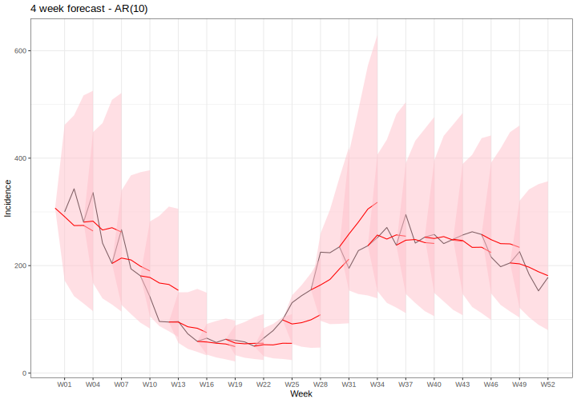Figure 11. 4 week forecast - AR(10)
Moving Average
Forecasts are a linear combination of past forecast errors
\(y_{t}=c+\varepsilon_{t}+\theta_{1}\varepsilon_{t-1}+\theta_{2}\varepsilon_{t-2}+\cdot\cdot\cdot\cdot+\theta_{q}\varepsilon_{t-q}\)
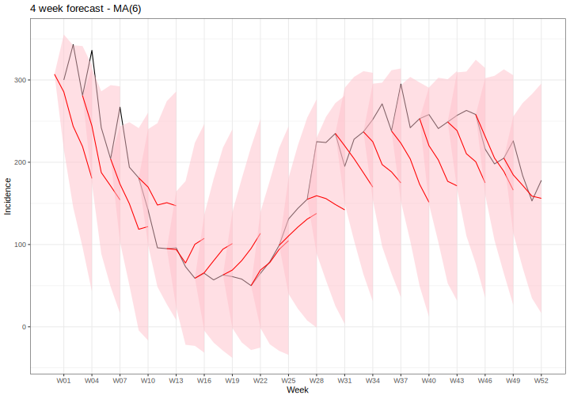Figure 12. 4 week forecast - MA(6)
ARIMA
AR and MA orders are automatically searched.
\(y_{t}^{\prime}=c+\phi_{1}y_{t-1}^{\prime}+\cdot\cdot\cdot+\phi_{p}y_{t-p}^{\prime}+\theta_{1}\varepsilon_{t-1}+\cdot\cdot\cdot+\theta_{q}\varepsilon_{t-q}+\varepsilon_{t}\)
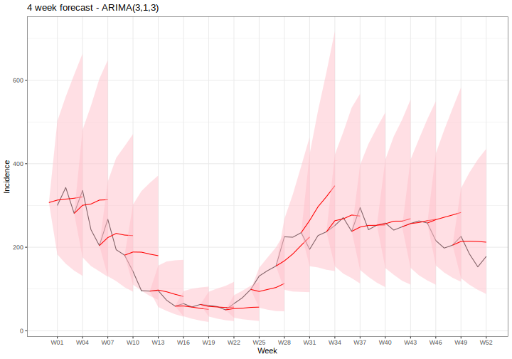Figure 13. 4 week forecast - ARIMA(3,1,3)
ARIMAX
Same setup as ARIMA but now with weather covariables
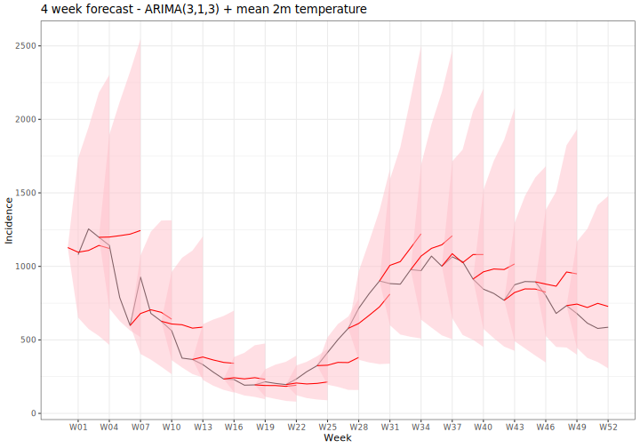
ARIMAX
What if all the covariables are combined?

SARIMA
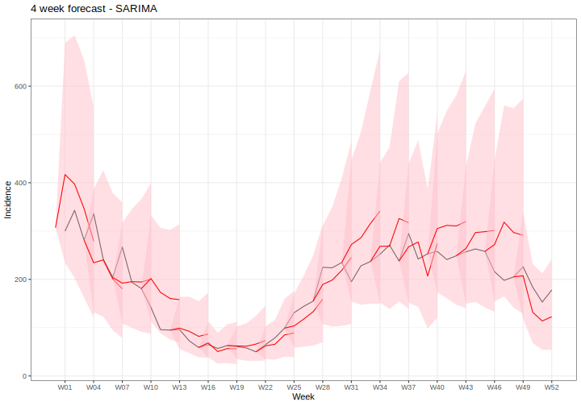Figure 21. 4 week forecast - SARIMA(1,0,1)(1,1,0)
SARIMAX

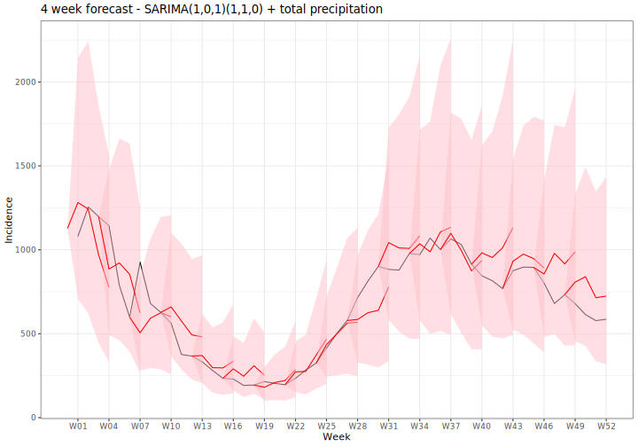
ARIMA-family models’ performances
| model | RMSE | CRPS |
|---|---|---|
| AR(10) | 121.9613 | 86.90873 |
| MA(6) | 258.3935 | 194.37162 |
| ARIMA(3,1,3) | 152.4431 | 99.83687 |
| ARIMA(3,1,3) + t2m | 143.0219 | 95.06217 |
| ARIMA(3,1,3) + precip | 150.2848 | 98.79393 |
| ARIMA(2,1,4) + rh | 157.9904 | 102.34364 |
| ARIMA(3,1,3) + t2m + tp | 144.0298 | 95.55888 |
| ARIMA(3,1,3) + t2m + rh | 146.0426 | 96.14892 |
| ARIMA(2,1,4) + tp + rh | 156.2430 | 101.55478 |
| ARIMA(3,1,3) + t2m + tp + rh | 146.1460 | 96.26296 |
| SARIMA(1,0,1)(1,1,0) | 131.7030 | 88.92623 |
| SARIMA(1,1,0)(1,0,2) + t2m | 130.9916 | 90.90089 |
| SARIMA(1,0,1)(1,1,0) + precip | 131.9193 | 88.37999 |
| SARIMA(1,0,1)(1,1,0) + rh | 136.1590 | 90.97274 |
Prophet
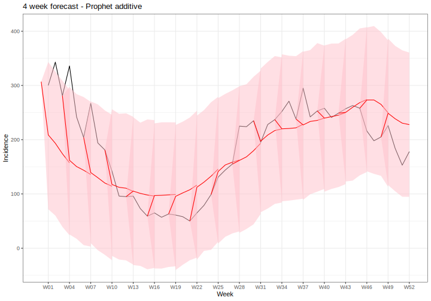
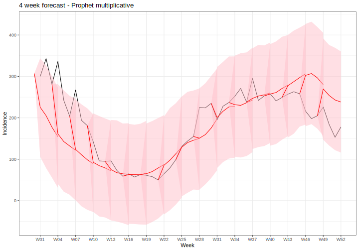
Prophet with exogenous regressors
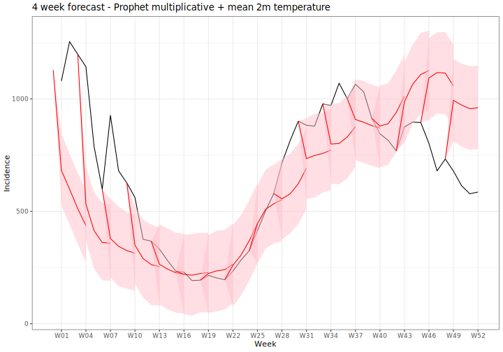
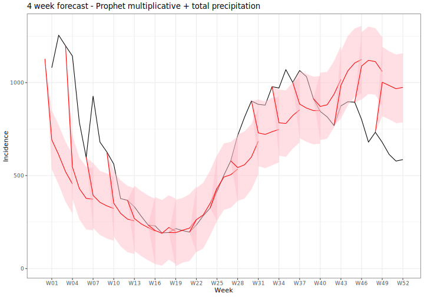
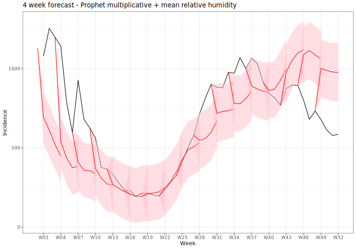
Prophet with holidays
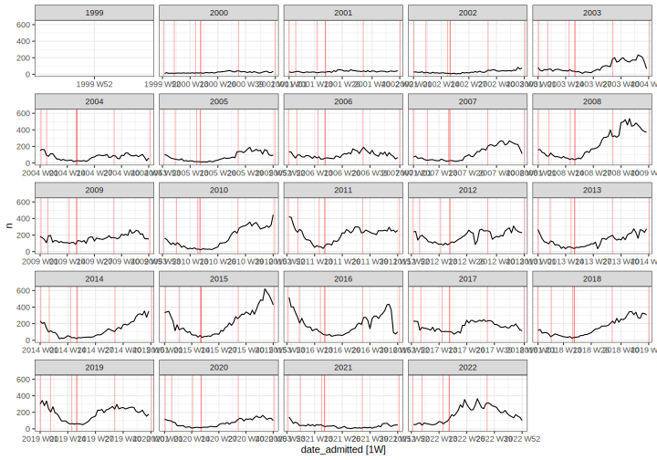Figure 31. Incidence time series with holidays
Prophet with holidays
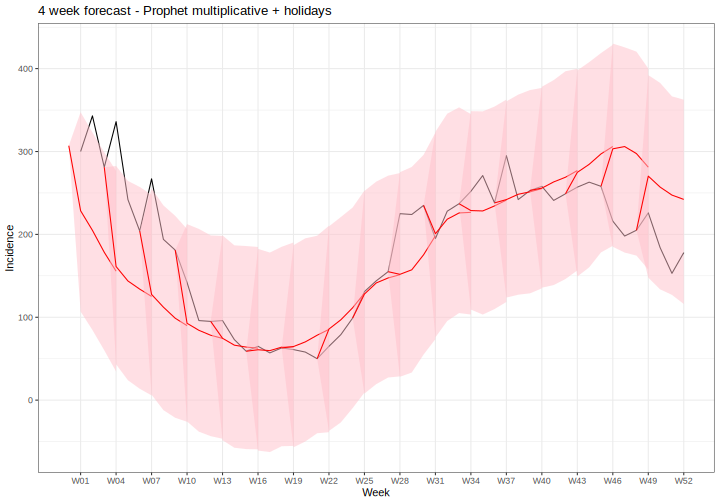Figure 32. 4 week forecast - Prophet additive + holidays
Prophet models’ performances
| model | RMSE | CRPS |
|---|---|---|
| Prophet additive | 240.2656 | 178.7422 |
| Prophet multiplicative | 211.4627 | 154.4824 |
| Prophet multiplicative + mean 2m temperature | 210.9408 | 155.1323 |
| Prophet multiplicative + total precipitation | 213.2225 | 155.7937 |
| Prophet multiplicative + mean relative humidity | 209.7889 | 155.1700 |
| Prophet multiplicative + all covariables | 211.9424 | 156.3973 |
| Prophet multiplicative + holidays | 211.5394 | 153.0994 |
Poisson regression
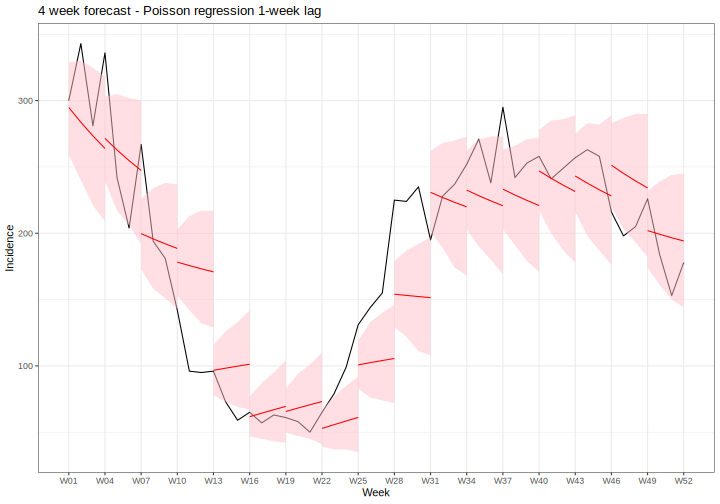Figure 33. 4 week forecast - Poisson regression 1-week lag
Poisson regression - different auto lags
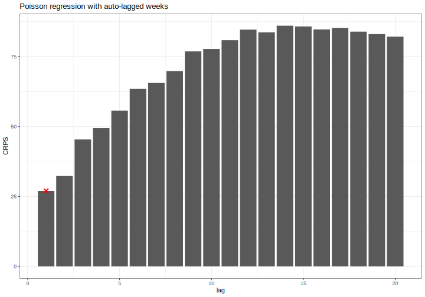Figure 34. 4 week forecast - Poisson regression different auto lags
Poisson regression - temperature lags
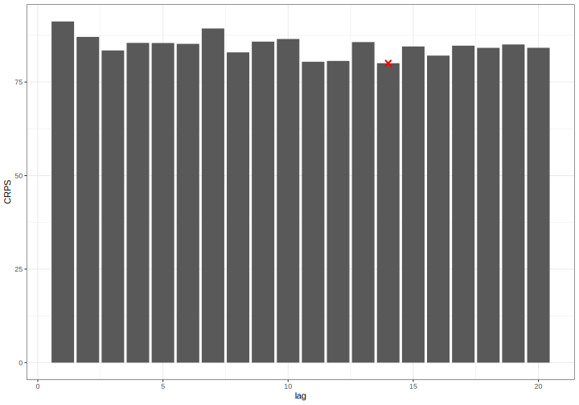Figure 35. 4 week forecast - Poisson regression 1-week lag, different temperature lags
Poisson regression - precipitation lags
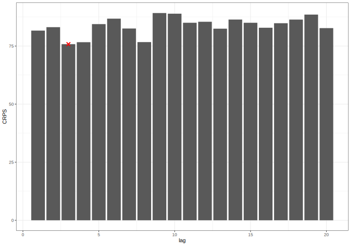Figure 36. 4 week forecast - Poisson regression 1-week lag, different precipitation lags
Poisson regression - relative humidity lags
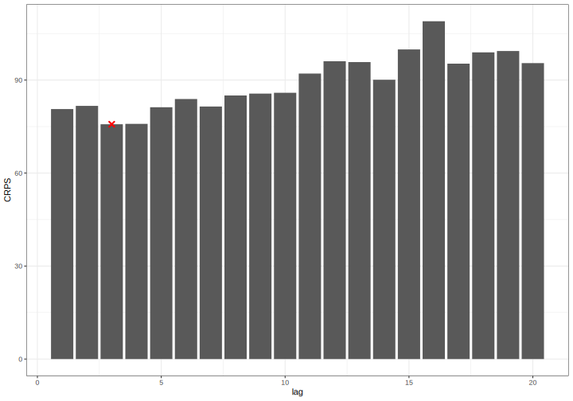Figure 37. 4 week forecast - Poisson regression 1-week lag, different relative humidity lags
Poisson regression - all covariables lagged
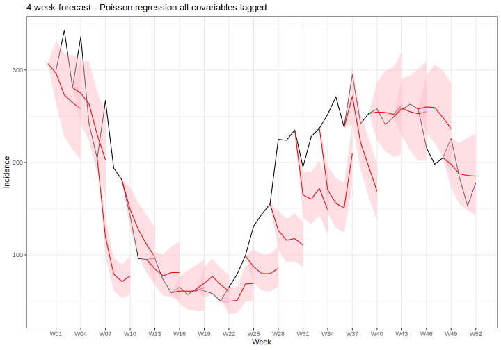Figure 38. 4 week forecast - Poisson regression 1-week lag, all covariables best lags